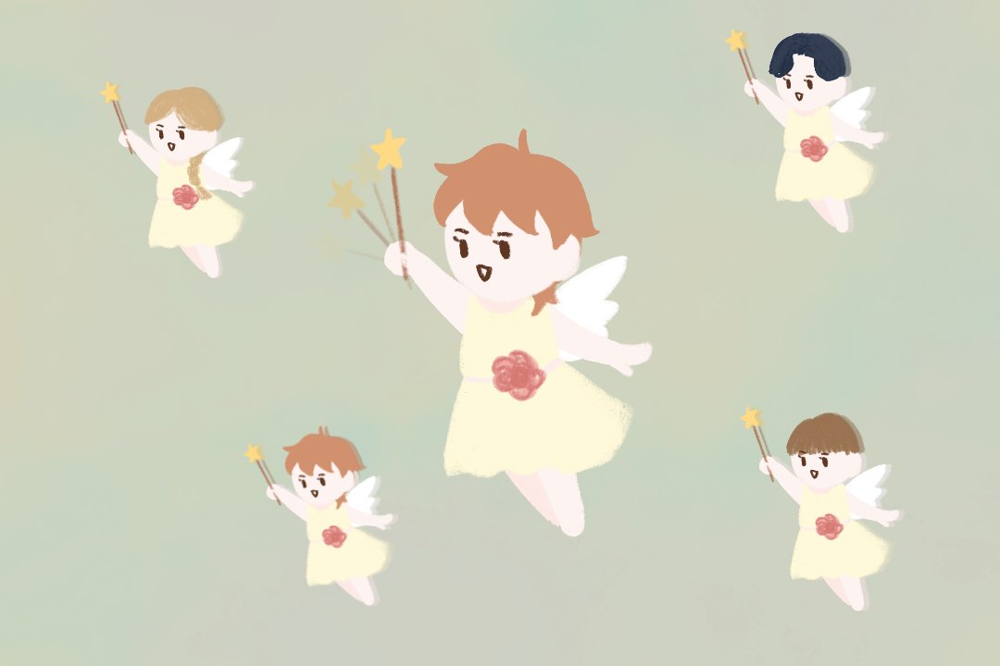
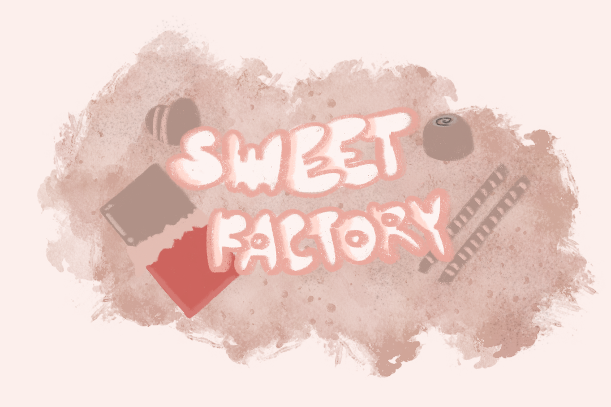
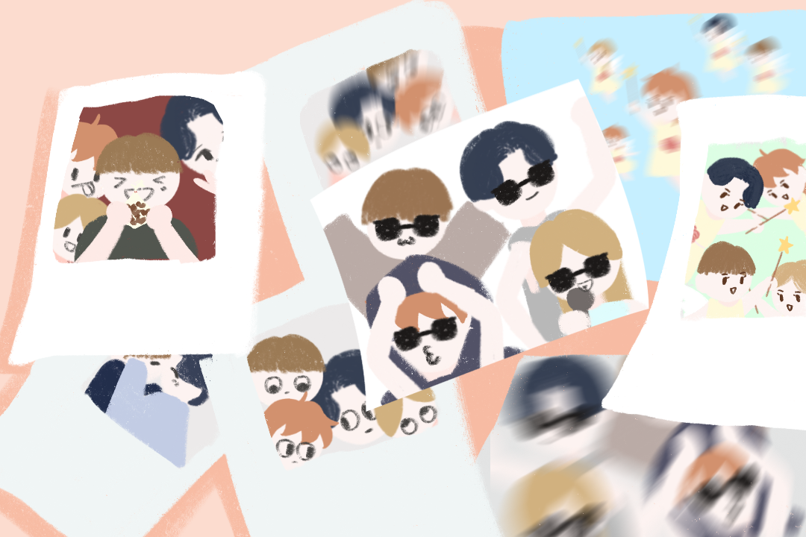

✮⋰𖧧大二下學期的三維電腦繪圖的3D建模作品𖧧⋱✮

第一個建模作業-桌燈，還練習了製作燈泡，非常意外可以做出這種程度( ˙᷄ỏ˙᷅ ) ᵒᵐᵍ ᵎ。
期中的武器建模作業，做了斧頭，跟著志峰老師做，基本分數完全沒問題✧*｡٩(ˊᗜˋ*)و｡


期末作業場景建模，選擇的主題是三合院，雖然呈現的材質效果沒有但氛圍感有了。
三合院裡的碗，蓋子呈現出的材質比碗感覺還好｡:.ﾟヽ(*´∀`)ﾉﾟ.:｡很喜歡木質桌的材質。

✮⋰𖧧大二下學期的Andy系列𖧧⋱✮

(｡･ω･｡)ﾉ♡。
✮⋰𖧧大二的自製動畫系列𖧧⋱✮

(｡･ω･｡)ﾉ♡。
三合院裡的碗，蓋子呈現出的材質比碗感覺還好｡:.ﾟヽ(*´∀`)ﾉﾟ.:｡很喜歡木質桌的材質。


(｡･ω･｡)ﾉ♡。